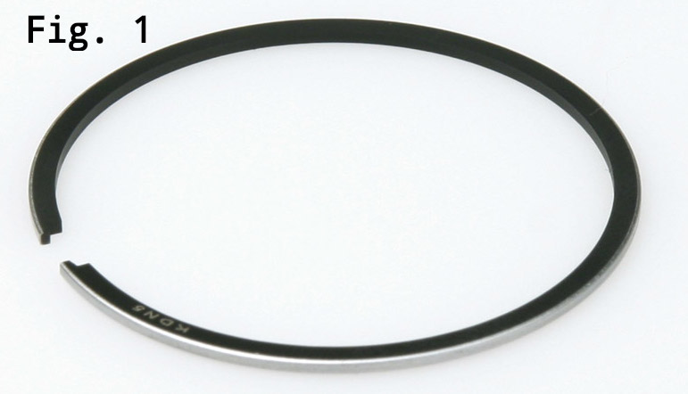
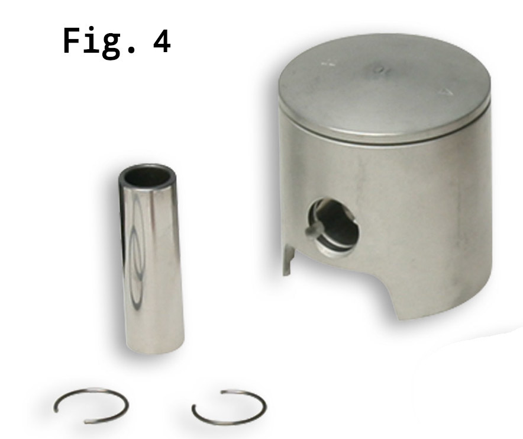
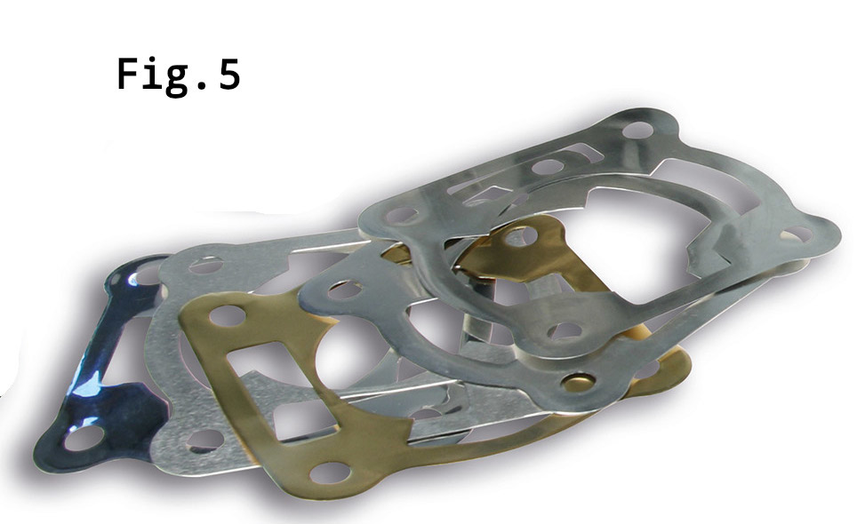
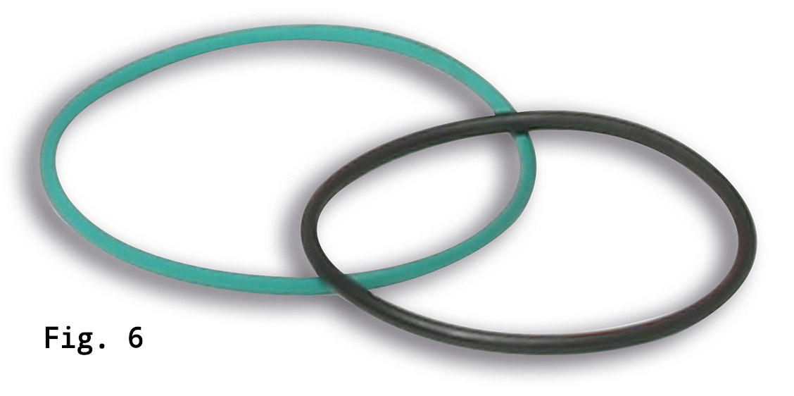

(Nota bene: da sapere prima di passare alle istruzioni di montaggio)
Valvola lamellare:
Utilizzare una valvola lamellare della linea MHR Malossi, col carter C-One viene già provveduta la valvola lamellare VL18.
Carburatore:
Minimo diametro 19 della linea Malossi. Nelle competizioni ScooterMatic usare diametro 21, nelle competizioni SuperScooter usare diametro 28.
Accensione:
Usare l’Accensione a rotore interno con un anticipo di 16°.
Nel nostro caso useremo lo MHR Team II con codice 5518975
Candela:
Usare la candela Iridium IW 34 con codice 631445.S0
Pompa di alimentazione carburante:
11023 pompa P 34 PB 2 con codice A11023
Olio motore:
7.1 2T OIL TOP RACING Full Synt (SAE 40) con codice 7616710B
Marmitta:
Scooter Racing MHR Team con codice 3 3215341
Gruppo trasmissione:
OVER RANGE MHR ALUMINUM (carter lungo) 6115781
Luce del segmento
La distanza fra i due estremi del segmento, chiamata “luce del segmento” deve essere di 0,15mm.
Per eseguire correttamente il controllo della luce del segmento procedere come indicato di seguito:
- Inserire nel cilindro il segmento dalla parte inferiore e spingerlo verso l’alto con l’aiuto del pistone portandolo a circa 5/6 mm dal piano di testa.
- Con uno spessimetro misurare la luce presente fra le due estremità del segmento.
Qualora la luce del segmento sia minore di 0,15mm, bisogna levigare le due estremità del segmento con una pietra abrasiva o con una lima fine diamantata fino ad ottenere il valore di 0,15mm avendo cura di eliminare nella zona delle estremità del segmento tutti gli spigoli vivi che potrebbero danneggiare il pistone o il riporto presente all’interno della canna del cilindro.
La lavorazione dell’estremità dei segmenti va eseguita dall’esterno verso l’interno per evitare di scheggiare il riporto di cromo duro presente sulla superficie esterna del segmento.
Preparazione gruppo termico
Lavare con benzina e soffiare con aria compressa tutti i componenti, in modo che tutti i condotti siano perfettamente puliti da eventuali corpi estranei.
Avvitare i due prigionieri di scarico sul cilindro.
Lubrificare infine con olio per motori la canna del cilindro, l’imbiellaggio (piede della biella dove va inserita la gabbia a rulli e testa della biella lato albero motore) e la gabbia rulli (figura 3).
1. Montaggio del pistone
1.1 Lubrificare con olio motore la sede dello spinotto e inserirlo nel pistone.
1.2 Inserire un fermo dello spinotto in una delle due apposite cave.
1.3 Posizionare il pistone sul piede di biella con la freccia sul cielo del pistone rivolta verso lo scarico.
1.4 Fare avanzare lo spinotto attraverso la gabbia a rulli e mandare a battuta lo spinotto contro il fermo montato in precedenza.
1.5 Montare il secondo fermo dello spinotto nell’altra cava del pistone.
2. Regolazione dello Squish
Al variare del valore dello squish si agisce variando lo spessore della guarnizione di base.
2.1 Montare la guarnizione di base di spessore medio sotto il cilindro ed imboccare il pistone accertandosi che entri completamente e senza attrito. In presenza di attriti, cercare le cause e rimuoverle.
2.2 Fissare il cilindro al basamento con i dadi.
2.3 Tagliare un filo di stagno di diametro 0,9/1,0 mm, con una lunghezza inferiore di 1/1,5 mm del diametro del cilindro.
2.4 Posizionare il filo di stagno sul cielo del pistone in corrispondenza dell’asse dello spinotto.
2.5 Montare la testa con le relative guarnizioni e serrare le viti della testa a 11 Nm
2.6 Fare ruotare l’albero motore in prossimità del punto morto superiore 4/5 volte.
(ci si può aiutare con la semipuleggia fissa)
2.7 Smontare la testa e misurare le due estremità dello spezzone di filo nel punto minimo, e fare la media fra i due valori riscontrati.
(es. media tra 0,46 e 0,50 = 0,48)
2.8 Se il valore è inferiore a 0,48 riprovare con una guarnizione più spessa e viceversa. Se il valore corrisponde a 0,48 la guarnizione provata è quella corretta.
3. Inserimento CILINDRO ed allineamento PISTONE
3.1 Applicare uno strato sottile di pasta per guarnizione tipo Loctite blu 5926 sulla guarnizione di base scelta e inserirla di nuovo nei prigionieri.
3.2 Inserire il segmento sul pistone.
3.3 Unire le estremità del segmento ed imboccare il cilindro facendolo scorrere fino al basamento.
4. Testa
4.1 Inserire con cura gli anelli di tenuta.
4.2 Inserire le rondelle, avvitare i dadi e serrarli in senso incrociato a 11 Nm.
4.3 Avvitare candela, vite spurgo e raccordo liquido di raffreddamento.
5. Rodaggio
Per il rodaggio si riporta al capitolo successivo riguardante il Circuito di raffreddamento
Strumenti
- Chiave dinamometrica
- Pasta per guarnizione tipo Loctite blu silicone 5926
- Olio motore
- Spessimetro
- Lima diamantata
- Filo di stagno di diametro 0,9/1,0 mm
- Calibro digitale
Dati di montaggio
- Coppia di serraggio dadi M7 fissaggio cilindro: 13 Nm (1,3 kgm)
- Coppia di serraggio brugole M6 fissaggio testa: 11 Nm (1,1 kgm)
- Coppia di serraggio brugole M6 fissaggio coperchio testa: 11 Nm (1,1 kgm)